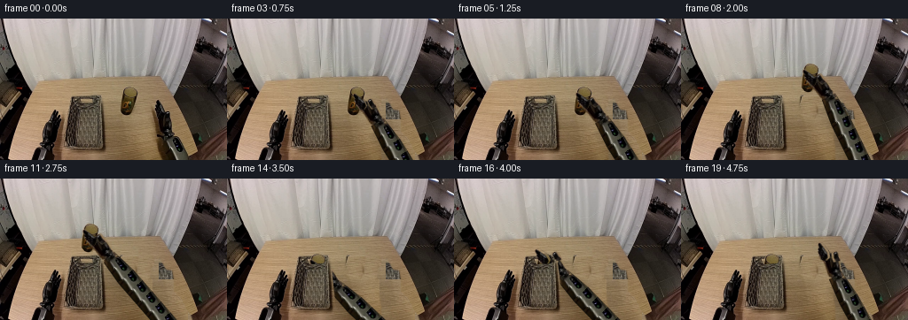
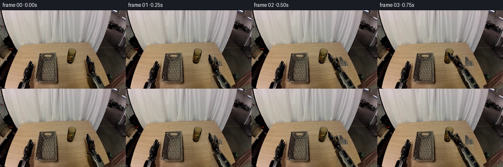

CODING AGENTS AS PIXEL WORLD MODELS
traex/GPT-6.1-Sol · common50_0033
点击播放 · 原生 RGB 像素
逐轮保存的候选
回放视频、检查图与代码变化。
每份候选均可单独播放。实际图片检查记录在下方工具轨迹中。
候选 01播放与检查图
点击播放 · 原生 RGB 像素


展开代码变化
--- 上一保存版本
+++ 本次保存版本
@@ -0,0 +1,211 @@
+from pathlib import Path
+import numpy as np
+from PIL import Image, ImageDraw, ImageFilter
+import artifact_io
+
+ROOT = Path(__file__).resolve().parent
+W,H=256,160
+SOURCE=np.asarray(Image.open(ROOT/'first_frame.png').convert('RGB')).astype(np.float32)
+Y,X=np.mgrid[:H,:W].astype(np.float32)
+
+def poly(points, feather=0.35):
+ s=4
+ im=Image.new('L',(W*s,H*s),0)
+ ImageDraw.Draw(im).polygon([(int(x*s),int(y*s)) for x,y in points],fill=255)
+ im=im.resize((W,H),Image.Resampling.LANCZOS)
+ if feather: im=im.filter(ImageFilter.GaussianBlur(feather))
+ return np.asarray(im).astype(np.float32)/255
+
+def blur(a,r):
+ return np.asarray(Image.fromarray(np.clip(a*255,0,255).astype(np.uint8)).filter(ImageFilter.GaussianBlur(r))).astype(np.float32)/255
+
+def sample(a,x,y):
+ x=np.clip(x,0,W-1.001); y=np.clip(y,0,H-1.001)
+ xi=np.floor(x).astype(int); yi=np.floor(y).astype(int)
+ fx=x-xi; fy=y-yi
+ if a.ndim==3: fx=fx[...,None];fy=fy[...,None]
+ return a[yi,xi]*(1-fx)*(1-fy)+a[yi,xi+1]*fx*(1-fy)+a[yi+1,xi]*(1-fx)*fy+a[yi+1,xi+1]*fx*fy
+
+def over(dst,rgb,alpha):
+ return dst*(1-alpha[...,None])+rgb*alpha[...,None]
+
+# All masks are geometric, specified here rather than loaded.
+CUP_MASK=poly([(143,76.7),(149,77.4),(153.3,79.7),(155.0,82.5),
+ (154.2,88.6),(152.5,97.2),(150.5,105.4),(148.5,108.6),(144.1,110),
+ (139.6,108.2),(136.0,104.2),(136.1,97.7),(137.1,89.3),(138.5,81.5),(140.5,78.8)],0.22)
+# Foreground gripper: two independent rigid jaws, palm and wrist.
+TOOL_MASK=poly([(176.6,92.0),(179.6,92.2),(181.6,96.3),(183.9,101.4),
+ (186.6,105.8),(190.2,104.4),(193,105.3),(193.8,111.4),(194.9,117),
+ (194.9,127.8),(193.7,131.7),(189.5,133.8),(184.2,133.6),
+ (180,131.5),(179.2,127.4),(178.3,121.2),(177.2,114.8),(175.0,110.3),
+ (174.9,103.3),(174.9,99.1),(176.6,97.6)],0.2)
+JA=poly([(176.5,91.8),(180,92.2),(182.6,98.6),(185.1,104.5),(184.6,110.7),
+ (180.6,113.2),(176.4,111.2),(174.8,105.4),(175,99.5),(176.1,97.7)],0.15)*TOOL_MASK
+JB=poly([(187.2,105.0),(190.4,104.3),(193.3,105.6),(194,112.7),(193.1,116),
+ (188,116.6),(186.7,111.5)],0.15)*TOOL_MASK
+PALM=TOOL_MASK*(1-JA)*(1-JB)
+
+ARM_CLEAR=poly([(174.3,91),(180.8,91),(184.8,99),(187.5,103),
+ (193.9,103.8),(195.5,113),(195.9,128),(200.4,132),(204.3,137),
+ (209.6,147),(215.5,155.5),(217,160),(174.6,160),(174.1,145),
+ (171.2,127),(169.9,109),(170.1,100.5),(173.9,99)],0.65)
+CUP_CLEAR=poly([(141,75.8),(150.8,76.2),(156.1,80.5),(156.4,89),
+ (154.7,101.5),(153.4,108.8),(150.8,112.8),(140,113),(134.3,108.7),
+ (133.6,102),(135.2,87),(137.1,79)],0.65)
+
+# Fit the broad tabletop illumination using only clean, local first-frame pixels.
+clean=(X>35)&(X<190)&(Y>68)&(Y<159)
+clean &= ~((X>70)&(X<126)&(Y>84))
+clean &= ~((X>130)&(X<160)&(Y>74)&(Y<115))
+clean &= ~((X<82)&(Y>101))
+clean &= ~((X>169)&(Y>91))
+clean &= (SOURCE[...,0]>115)&(SOURCE[...,1]>93)&(SOURCE[...,2]>58)
+features=np.stack([np.ones_like(X),X/256,Y/160,(X/256)**2,(Y/160)**2,X*Y/(256*160)],-1)
+coef=np.linalg.lstsq(features[clean],SOURCE[clean],rcond=None)[0]
+illum=features@coef
+residual=SOURCE-illum
+
+def table_fill(which):
+ # The patch donor is a nearby unoccluded strip of the same wooden surface.
+ if which=='arm':
+ sx=125+np.mod(X-172,40)
+ sy=Y.copy()
+ # avoid the original cup when sourcing rows through its height
+ sx=np.where((Y<114)&(sx>131),sx-33,sx)
+ else:
+ sx=X-24
+ sy=Y.copy()
+ sx=np.where(Y>87,X+18,sx)
+ tex=sample(residual,sx,sy)
+ return np.clip(illum+tex,0,255)
+
+EMPTY_ARM=over(SOURCE,table_fill('arm'),ARM_CLEAR)
+EMPTY_ALL=over(EMPTY_ARM,table_fill('cup'),CUP_CLEAR)
+
+BASKET_FRONT=poly([(79.6,93.8),(86.2,96.6),(93.5,98.6),(110.8,97.0),
+ (116.7,94.3),(118.5,108),(121.7,137.7),(122.5,146.3),(117.2,148.5),
+ (79.3,147.7),(74.4,144.6),(72.9,139),(76.2,113.5)],0.18)
+# Thin near-side woven lip is above the larger wall.
+BASKET_LIP=poly([(79.5,92.9),(84.4,95.5),(93.5,97.2),(108.7,95.9),
+ (117.3,92.8),(117.1,95.7),(111.2,98),(94.8,99.8),(82,97),(79.1,95.8)],0.12)
+BASKET_OCC=np.maximum(BASKET_FRONT,BASKET_LIP)
+
+WRIST0=np.array([187.,132.],np.float32)
+D0=np.array([0.54,0.841665],np.float32);D0/=np.linalg.norm(D0)
+P0=np.array([-D0[1],D0[0]])
+# The two-link elbow and base lie outside the camera crop. Solve rigid IK,
+# so the visible forearm never stretches to reach the changing wrist.
+LEN=155.0
+ELBOW0=WRIST0+LEN*D0
+BASE=np.array([325.,170.])
+UPPER=np.linalg.norm(ELBOW0-BASE)
+
+def arm_direction(wrist):
+ v=BASE-wrist; dist=np.linalg.norm(v); e=v/dist
+ a=(LEN**2-UPPER**2+dist**2)/(2*dist)
+ h=np.sqrt(max(0,LEN**2-a*a))
+ q=np.array([-e[1],e[0]])
+ e1=wrist+a*e+h*q; e2=wrist+a*e-h*q
+ elbow=e1 if e1[1]>e2[1] else e2
+ return (elbow-wrist)/LEN, elbow
+
+# Source cross sections of the gray/black forearm preserve photographed materials.
+def forearm(canvas,wrist):
+ d,elbow=arm_direction(wrist);p=np.array([-d[1],d[0]])
+ dx=X-wrist[0];dy=Y-wrist[1]
+ t=dx*d[0]+dy*d[1]; q=dx*p[0]+dy*p[1]
+ width=8.5+3*np.clip(t/30,0,1)
+ alpha=np.clip(width+0.5-np.abs(q),0,1)*np.clip(t+1,0,1)*np.clip(LEN-t,0,1)
+ # Cylindrical profile, longitudinal texture from first-frame arm material.
+ ts=np.where(t<29,np.maximum(t,3),13+np.mod(t-13,16))
+ qs=q*(10.5/width)
+ sx=WRIST0[0]+D0[0]*ts+P0[0]*qs
+ sy=WRIST0[1]+D0[1]*ts+P0[1]*qs
+ tex=sample(SOURCE,sx,sy)
+ # The source image contains a soft table shadow on its left edge. Restrict
+ # that edge to solid black robot metal, retaining the center's real texture.
+ edge=np.clip((np.abs(q)/width-.78)/.22,0,1)
+ tex=tex*(1-edge[...,None]*.65)+np.array([16,15,12])*edge[...,None]*.65
+ # Local table contact shadow, with intensity falling toward elevated tool.
+ sd=xsd=dx*d[0]+(dy-3)*d[1]
+ sq=(dx+5)*p[0]+(dy-3)*p[1]
+ sh=np.exp(-(sq/(width+4))**2*1.5)*(sd>5)*(sd<LEN)
+ sh=blur(sh,.9)*.16
+ canvas=canvas*(1-sh[...,None])
+ return over(canvas,tex,alpha),alpha
+
+def rigid_tool(canvas,wrist,angle,jaw):
+ c=np.cos(angle);s=np.sin(angle)
+ dx=X-wrist[0];dy=Y-wrist[1]
+ sx=WRIST0[0]+c*dx+s*dy
+ sy=WRIST0[1]-s*dx+c*dy
+ for mask,offset in [(PALM,0),(JA,-jaw),(JB,jaw)]:
+ tx=sx-offset
+ alpha=sample(mask,tx,sy)
+ rgb=sample(SOURCE,tx,sy)
+ canvas=over(canvas,rgb,alpha)
+ return canvas
+
+def glass(canvas,shift):
+ sx=X-shift[0];sy=Y-shift[1]
+ m=sample(CUP_MASK,sx,sy)
+ m*=((sx>=0)&(sx<W-1)&(sy>=0)&(sy<H-1))
+ return over(canvas,sample(SOURCE,sx,sy),m)
+
+def smooth(v):
+ v=np.clip(v,0,1);return v*v*(3-2*v)
+
+def mix(a,b,v):return np.array(a)*(1-v)+np.array(b)*v
+
+def state(i):
+ contact=np.array([166.,114.])
+ ang=-np.pi/6
+ if i<=4:
+ e=smooth(i/4)
+ return mix(WRIST0,contact,e),ang*e,1.7*(1-e)+.8*e,np.array([0.,0.]),False
+ if i<=5:
+ return contact,ang,0.,np.array([0.,0.]),False
+ if i<=8:
+ e=smooth((i-5)/3);shift=np.array([0.,-26*e])
+ return contact+shift,ang,0.,shift,True
+ if i<=11:
+ e=smooth((i-8)/3);shift=np.array([-44*e,-26.])
+ return contact+shift,ang,0.,shift,True
+ if i<=14:
+ e=smooth((i-11)/3);shift=np.array([-44.,-26+34*e])
+ return contact+shift,ang,0.,shift,True
+ shift=np.array([-44.,8.])
+ if i==15:return contact+shift,ang,2.,shift,True
+ if i<=17:
+ e=smooth((i-15)/2)
+ return contact+shift+np.array([0.,-26*e]),ang,2.6,shift,True
+ e=smooth((i-17)/2)
+ return mix(contact+shift+np.array([0.,-26]),[174.,110.],e),ang*(1-e)+(-.17)*e,2.6,shift,True
+
+def generate():
+ frames=[]
+ for i in range(20):
+ if i==0:
+ frames.append(SOURCE.astype(np.uint8));continue
+ wrist,angle,jaw,shift,lifted=state(i)
+ canvas=(EMPTY_ALL if lifted else EMPTY_ARM).copy()
+ # A grounded, soft shadow shrinks as the rigid glass rises.
+ if lifted and i<12:
+ ground=np.array([144.,109.])+np.array([shift[0],max(0.,shift[1])])
+ height=max(0.,-shift[1]);spread=5+height*.16
+ sh=np.exp(-((X-ground[0]-3)/spread)**2-((Y-ground[1]-1)/2.1)**2)
+ canvas*=1-(sh*.12*np.exp(-height/28))[...,None]
+ canvas,armmask=forearm(canvas,wrist)
+ # Glass lies behind the tool's gripping jaws, but in front of back rim.
+ if lifted:canvas=glass(canvas,shift)
+ canvas=rigid_tool(canvas,wrist,angle,jaw)
+ # Only once carried over the basket does its fixed near wall occlude it.
+ if i>=10:
+ canvas=over(canvas,SOURCE,BASKET_OCC)
+ frames.append(np.clip(np.round(canvas),0,255).astype(np.uint8))
+ return np.stack(frames)
+
+if __name__=='__main__':
+ frames=generate()
+ assert np.array_equal(frames[0],np.asarray(Image.open(ROOT/'first_frame.png').convert('RGB')))
+ artifact_io.save(frames,ROOT)
候选 02播放与检查图
点击播放 · 原生 RGB 像素

展开代码变化
--- 上一保存版本
+++ 本次保存版本
@@ -70,12 +70,12 @@
if which=='arm':
sx=125+np.mod(X-172,40)
sy=Y.copy()
- # avoid the original cup when sourcing rows through its height
- sx=np.where((Y<114)&(sx>131),sx-33,sx)
+ # The narrow strip to the right of the cup contains only wood: do not
+ # copy the basket or either gripper into the newly exposed tabletop.
+ sx=np.where(Y<114,156+np.mod(X-172,12),sx)
else:
- sx=X-24
+ sx=156+np.mod(X-134,13)
sy=Y.copy()
- sx=np.where(Y>87,X+18,sx)
tex=sample(residual,sx,sy)
return np.clip(illum+tex,0,255)
@@ -127,7 +127,7 @@
edge=np.clip((np.abs(q)/width-.78)/.22,0,1)
tex=tex*(1-edge[...,None]*.65)+np.array([16,15,12])*edge[...,None]*.65
# Local table contact shadow, with intensity falling toward elevated tool.
- sd=xsd=dx*d[0]+(dy-3)*d[1]
+ sd=dx*d[0]+(dy-3)*d[1]
sq=(dx+5)*p[0]+(dy-3)*p[1]
sh=np.exp(-(sq/(width+4))**2*1.5)*(sd>5)*(sd<LEN)
sh=blur(sh,.9)*.16
候选 03播放与检查图
可观测工具轨迹
实际执行的命令与返回图片。
命令 1exit 0
/bin/bash -lc 'ls -la && cat prompt.txt && cat GENERATION_RULES.md'
命令 2exit 0
/bin/bash -lc "cat task_spec.json && cat artifact_io.py && python - <<'PY'
from PIL import Image
import numpy as np
im=np.array(Image.open('first_frame.png'))
print('shape',im.shape)
palette=np.array([[220,220,220],[150,150,150],[75,75,75],[25,25,25],[160,120,80],[100,70,40],[110,120,60],[160,170,100],[190,160,120],[70,95,120],[130,70,65],[235,215,190]])
chars=' .o#bBgvtsrp'
a=np.array(Image.fromarray(im).resize((128,80)))
idx=np.argmin(((a[:,:,None,:].astype(float)-palette)**2).sum(-1),axis=-1)
for row in idx: print(''.join(chars[x] for x in row))
PY"命令 3exit 0
/bin/bash -lc "python - <<'PY'
from PIL import Image
import numpy as np
im=np.array(Image.open('first_frame.png').convert('RGB'))
print('Gray map')
a=np.array(Image.fromarray(im).resize((128,80))).mean(2)
c='@%#*+=-:. '
for y,row in enumerate(a):print(f'{y*2:03d} '+''.join(c[min(9,int(v/256*10))] for v in row))
print('Color points in upper-middle table:')
for y in range(64,116,4):
print(y,' '.join(f'{x}:{tuple(im[y,x])}' for x in range(128,188,4)))
PY"命令 4exit 0
/bin/bash -lc "python - <<'PY'
from PIL import Image
import numpy as np
im=np.array(Image.open('first_frame.png')).astype(float)
for crop in [(130,74,159,112),(166,88,204,160),(70,84,126,152),(44,101,80,160)]:
x0,y0,x1,y1=crop
print('\\nCROP',crop,' x mod10:',''.join(str(x%10) for x in range(x0,x1)))
for y in range(y0,y1):
chars=[]
for r,g,b in im[y,x0:x1]:
lum=(r+g+b)/3
if lum<15:c='@'
elif lum<30:c='#'
elif lum<45:c='X'
elif r>g+12 and g>b+20 and r<130:c='v' if g-r*.72>0 else 'b'
elif max(r,g,b)-min(r,g,b)<18:c='O' if lum<90 else 's' if lum<140 else '.'
elif r>g+12 and g>b+20:c='.'
elif r>g+12 and r>b+20:c='b'
elif g>b+20:c='g'
else:c='o' if lum<90 else '-'
chars.append(c)
print(f'{y:03d} '+''.join(chars))
PY"命令 5exit 0
/bin/bash -lc "python - <<'PY'
from PIL import Image
import numpy as np
im=np.array(Image.open('first_frame.png')).astype(float)
for crop in [(170,88,228,160),(195,115,256,160),(0,0,30,70),(210,0,256,82)]:
x0,y0,x1,y1=crop
print('\\n',crop, ''.join(str(x//10%10) for x in range(x0,x1)), '\\n '+''.join(str(x%10) for x in range(x0,x1)))
for y in range(y0,y1):
row=im[y,x0:x1]; out=''
for r,g,b in row:
lum=(r+g+b)/3
c='@' if lum<10 else '#' if lum<25 else 'X' if lum<40 else 'O' if lum<65 else 'o' if lum<90 else '-' if lum<125 else '+' if lum<165 else '.'
if r>g+15 and g>b+18 and lum>40:c=' '
out+=c
print(f'{y:03d} {out}')
PY"命令 6exit 0
/bin/bash -lc "python - <<'PY'
from PIL import Image
import numpy as np
im=np.array(Image.open('first_frame.png')).astype(float)
for y in range(126,160,2):
print(y, ' '.join(f'{x}:{tuple(im[y,x].astype(int))}' for x in range(178,218,3)))
PY"命令 7exit 0
/bin/bash -lc "cat > generate.py <<'PY'
from pathlib import Path
import numpy as np
from PIL import Image, ImageDraw, ImageFilter
import artifact_io
ROOT = Path(__file__).resolve().parent
W,H=256,160
SOURCE=np.asarray(Image.open(ROOT/'first_frame.png').convert('RGB')).astype(np.float32)
Y,X=np.mgrid[:H,:W].astype(np.float32)
def poly(points, feather=0.35):
s=4
im=Image.new('L',(W*s,H*s),0)
ImageDraw.Draw(im).polygon([(int(x*s),int(y*s)) for x,y in points],fill=255)
im=im.resize((W,H),Image.Resampling.LANCZOS)
if feather: im=im.filter(ImageFilter.GaussianBlur(feather))
return np.asarray(im).astype(np.float32)/255
def blur(a,r):
return np.asarray(Image.fromarray(np.clip(a*255,0,255).astype(np.uint8)).filter(ImageFilter.GaussianBlur(r))).astype(np.float32)/255
def sample(a,x,y):
x=np.clip(x,0,W-1.001); y=np.clip(y,0,H-1.001)
xi=np.floor(x).astype(int); yi=np.floor(y).astype(int)
fx=x-xi; fy=y-yi
if a.ndim==3: fx=fx[...,None];fy=fy[...,None]
return a[yi,xi]*(1-fx)*(1-fy)+a[yi,xi+1]*fx*(1-fy)+a[yi+1,xi]*(1-fx)*fy+a[yi+1,xi+1]*fx*fy
def over(dst,rgb,alpha):
return dst*(1-alpha[...,None])+rgb*alpha[...,None]
# All masks are geometric, specified here rather than loaded.
CUP_MASK=poly([(143,76.7),(149,77.4),(153.3,79.7),(155.0,82.5),
(154.2,88.6),(152.5,97.2),(150.5,105.4),(148.5,108.6),(144.1,110),
(139.6,108.2),(136.0,104.2),(136.1,97.7),(137.1,89.3),(138.5,81.5),(140.5,78.8)],0.22)
# Foreground gripper: two independent rigid jaws, palm and wrist.
TOOL_MASK=poly([(176.6,92.0),(179.6,92.2),(181.6,96.3),(183.9,101.4),
(186.6,105.8),(190.2,104.4),(193,105.3),(193.8,111.4),(194.9,117),
(194.9,127.8),(193.7,131.7),(189.5,133.8),(184.2,133.6),
(180,131.5),(179.2,127.4),(178.3,121.2),(177.2,114.8),(175.0,110.3),
(174.9,103.3),(174.9,99.1),(176.6,97.6)],0.2)
JA=poly([(176.5,91.8),(180,92.2),(182.6,98.6),(185.1,104.5),(184.6,110.7),
(180.6,113.2),(176.4,111.2),(174.8,105.4),(175,99.5),(176.1,97.7)],0.15)*TOOL_MASK
JB=poly([(187.2,105.0),(190.4,104.3),(193.3,105.6),(194,112.7),(193.1,116),
(188,116.6),(186.7,111.5)],0.15)*TOOL_MASK
PALM=TOOL_MASK*(1-JA)*(1-JB)
ARM_CLEAR=poly([(174.3,91),(180.8,91),(184.8,99),(187.5,103),
(193.9,103.8),(195.5,113),(195.9,128),(200.4,132),(204.3,137),
(209.6,147),(215.5,155.5),(217,160),(174.6,160),(174.1,145),
(171.2,127),(169.9,109),(170.1,100.5),(173.9,99)],0.65)
CUP_CLEAR=poly([(141,75.8),(150.8,76.2),(156.1,80.5),(156.4,89),
(154.7,101.5),(153.4,108.8),(150.8,112.8),(140,113),(134.3,108.7),
(133.6,102),(135.2,87),(137.1,79)],0.65)
# Fit the broad tabletop illumination using only clean, local first-frame pixels.
clean=(X>35)&(X<190)&(Y>68)&(Y<159)
clean &= ~((X>70)&(X<126)&(Y>84))
clean &= ~((X>130)&(X<160)&(Y>74)&(Y<115))
clean &= ~((X<82)&(Y>101))
clean &= ~((X>169)&(Y>91))
clean &= (SOURCE[...,0]>115)&(SOURCE[...,1]>93)&(SOURCE[...,2]>58)
features=np.stack([np.ones_like(X),X/256,Y/160,(X/256)**2,(Y/160)**2,X*Y/(256*160)],-1)
coef=np.linalg.lstsq(features[clean],SOURCE[clean],rcond=None)[0]
illum=features@coef
residual=SOURCE-illum
def table_fill(which):
# The patch donor is a nearby unoccluded strip of the same wooden surface.
if which=='arm':
sx=125+np.mod(X-172,40)
sy=Y.copy()
# avoid the original cup when sourcing rows through its height
sx=np.where((Y<114)&(sx>131),sx-33,sx)
else:
sx=X-24
sy=Y.copy()
sx=np.where(Y>87,X+18,sx)
tex=sample(residual,sx,sy)
return np.clip(illum+tex,0,255)
EMPTY_ARM=over(SOURCE,table_fill('arm'),ARM_CLEAR)
EMPTY_ALL=over(EMPTY_ARM,table_fill('cup'),CUP_CLEAR)
BASKET_FRONT=poly([(79.6,93.8),(86.2,96.6),(93.5,98.6),(110.8,97.0),
(116.7,94.3),(118.5,108),(121.7,137.7),(122.5,146.3),(117.2,148.5),
(79.3,147.7),(74.4,144.6),(72.9,139),(76.2,113.5)],0.18)
# Thin near-side woven lip is above the larger wall.
BASKET_LIP=poly([(79.5,92.9),(84.4,95.5),(93.5,97.2),(108.7,95.9),
(117.3,92.8),(117.1,95.7),(111.2,98),(94.8,99.8),(82,97),(79.1,95.8)],0.12)
BASKET_OCC=np.maximum(BASKET_FRONT,BASKET_LIP)
WRIST0=np.array([187.,132.],np.float32)
D0=np.array([0.54,0.841665],np.float32);D0/=np.linalg.norm(D0)
P0=np.array([-D0[1],D0[0]])
# The two-link elbow and base lie outside the camera crop. Solve rigid IK,
# so the visible forearm never stretches to reach the changing wrist.
LEN=155.0
ELBOW0=WRIST0+LEN*D0
BASE=np.array([325.,170.])
UPPER=np.linalg.norm(ELBOW0-BASE)
def arm_direction(wrist):
v=BASE-wrist; dist=np.linalg.norm(v); e=v/dist
a=(LEN**2-UPPER**2+dist**2)/(2*dist)
h=np.sqrt(max(0,LEN**2-a*a))
q=np.array([-e[1],e[0]])
e1=wrist+a*e+h*q; e2=wrist+a*e-h*q
elbow=e1 if e1[1]>e2[1] else e2
return (elbow-wrist)/LEN, elbow
# Source cross sections of the gray/black forearm preserve photographed materials.
def forearm(canvas,wrist):
d,elbow=arm_direction(wrist);p=np.array([-d[1],d[0]])
dx=X-wrist[0];dy=Y-wrist[1]
t=dx*d[0]+dy*d[1]; q=dx*p[0]+dy*p[1]
width=8.5+3*np.clip(t/30,0,1)
alpha=np.clip(width+0.5-np.abs(q),0,1)*np.clip(t+1,0,1)*np.clip(LEN-t,0,1)
# Cylindrical profile, longitudinal texture from first-frame arm material.
ts=np.where(t<29,np.maximum(t,3),13+np.mod(t-13,16))
qs=q*(10.5/width)
sx=WRIST0[0]+D0[0]*ts+P0[0]*qs
sy=WRIST0[1]+D0[1]*ts+P0[1]*qs
tex=sample(SOURCE,sx,sy)
# The source image contains a soft table shadow on its left edge. Restrict
# that edge to solid black robot metal, retaining the center's real texture.
edge=np.clip((np.abs(q)/width-.78)/.22,0,1)
tex=tex*(1-edge[...,None]*.65)+np.array([16,15,12])*edge[...,None]*.65
# Local table contact shadow, with intensity falling toward elevated tool.
sd=xsd=dx*d[0]+(dy-3)*d[1]
sq=(dx+5)*p[0]+(dy-3)*p[1]
sh=np.exp(-(sq/(width+4))**2*1.5)*(sd>5)*(sd<LEN)
sh=blur(sh,.9)*.16
canvas=canvas*(1-sh[...,None])
return over(canvas,tex,alpha),alpha
def rigid_tool(canvas,wrist,angle,jaw):
c=np.cos(angle);s=np.sin(angle)
dx=X-wrist[0];dy=Y-wrist[1]
sx=WRIST0[0]+c*dx+s*dy
sy=WRIST0[1]-s*dx+c*dy
for mask,offset in [(PALM,0),(JA,-jaw),(JB,jaw)]:
tx=sx-offset
alpha=sample(mask,tx,sy)
rgb=sample(SOURCE,tx,sy)
canvas=over(canvas,rgb,alpha)
return canvas
def glass(canvas,shift):
sx=X-shift[0];sy=Y-shift[1]
m=sample(CUP_MASK,sx,sy)
m*=((sx>=0)&(sx<W-1)&(sy>=0)&(sy<H-1))
return over(canvas,sample(SOURCE,sx,sy),m)
def smooth(v):
v=np.clip(v,0,1);return v*v*(3-2*v)
def mix(a,b,v):return np.array(a)*(1-v)+np.array(b)*v
def state(i):
contact=np.array([166.,114.])
ang=-np.pi/6
if i<=4:
e=smooth(i/4)
return mix(WRIST0,contact,e),ang*e,1.7*(1-e)+.8*e,np.array([0.,0.]),False
if i<=5:
return contact,ang,0.,np.array([0.,0.]),False
if i<=8:
e=smooth((i-5)/3);shift=np.array([0.,-26*e])
return contact+shift,ang,0.,shift,True
if i<=11:
e=smooth((i-8)/3);shift=np.array([-44*e,-26.])
return contact+shift,ang,0.,shift,True
if i<=14:
e=smooth((i-11)/3);shift=np.array([-44.,-26+34*e])
return contact+shift,ang,0.,shift,True
shift=np.array([-44.,8.])
if i==15:return contact+shift,ang,2.,shift,True
if i<=17:
e=smooth((i-15)/2)
return contact+shift+np.array([0.,-26*e]),ang,2.6,shift,True
e=smooth((i-17)/2)
return mix(contact+shift+np.array([0.,-26]),[174.,110.],e),ang*(1-e)+(-.17)*e,2.6,shift,True
def generate():
frames=[]
for i in range(20):
if i==0:
frames.append(SOURCE.astype(np.uint8));continue
wrist,angle,jaw,shift,lifted=state(i)
canvas=(EMPTY_ALL if lifted else EMPTY_ARM).copy()
# A grounded, soft shadow shrinks as the rigid glass rises.
if lifted and i<12:
ground=np.array([144.,109.])+np.array([shift[0],max(0.,shift[1])])
height=max(0.,-shift[1]);spread=5+height*.16
sh=np.exp(-((X-ground[0]-3)/spread)**2-((Y-ground[1]-1)/2.1)**2)
canvas*=1-(sh*.12*np.exp(-height/28))[...,None]
canvas,armmask=forearm(canvas,wrist)
# Glass lies behind the tool's gripping jaws, but in front of back rim.
if lifted:canvas=glass(canvas,shift)
canvas=rigid_tool(canvas,wrist,angle,jaw)
# Only once carried over the basket does its fixed near wall occlude it.
if i>=10:
canvas=over(canvas,SOURCE,BASKET_OCC)
frames.append(np.clip(np.round(canvas),0,255).astype(np.uint8))
return np.stack(frames)
if __name__=='__main__':
frames=generate()
assert np.array_equal(frames[0],np.asarray(Image.open(ROOT/'first_frame.png').convert('RGB')))
artifact_io.save(frames,ROOT)
PY
python generate.py"命令 8exit 0
/bin/bash -lc "python - <<'PY'
import generate as g
import numpy as np
from PIL import Image
f=g.generate()
for i in range(1,20):
d=np.abs(f[i].astype(float)-f[i-1].astype(float)).mean(2)
print(i, 'mean delta',round(d.mean(),2),'pixels>25',int((d>25).sum()),'wrist',g.state(i)[0].round(2),'cup',g.state(i)[3])
# Numeric structure of scenes through approach, carry, release.
for i in [0,1,5,8,11,14,19]:
print('\\nFRAME',i)
a=np.array(Image.fromarray(f[i]).resize((128,80))).mean(2)
chars='@%#*+=-:. '
for y in range(34,78):print(f'{y*2:03d} '+''.join(chars[min(9,int(v/256*10))] for v in a[y,34:112]))
Image.fromarray(g.EMPTY_ALL.astype('uint8')).save('empty_workspace.png')
PY"命令 9exit 0
/bin/bash -lc "python - <<'PY'
import generate as g
import numpy as np
f=g.generate()
for region in ['arm','cup']:
tex=g.table_fill(region); m=g.ARM_CLEAR if region=='arm' else g.CUP_CLEAR
print(region,'min filled',tex[m>.9].min(0),'max',tex[m>.9].max(0),'dark restored pixels',((tex.mean(2)<78)&(m>.9)).sum())
for i in [0,5,8,11,14,19]:
print('\\nFRAME',i)
for y in range(72,135,2):
out=''
for x in range(75,201,2):
r,gr,b=f[i,y,x].astype(float);l=(r+gr+b)/3
c='@' if l<15 else '#' if l<35 else 'X' if l<55 else 'O' if l<75 else 'o' if l<95 else '+' if l<135 else '.'
if r>gr+13 and gr>b+18 and l>80:c=' '
out+=c
print(f'{y:03d} '+out)
# Track contact geometry and check that non-action area remains unchanged.
mask=np.maximum(g.ARM_CLEAR,g.CUP_CLEAR)
unchanged=np.max(np.abs(f[1:].astype(float)-f[0].astype(float)),axis=(0,3))
print('outside workspace changes',(unchanged[(g.X<130)&(g.Y<70)]>0).sum())
PY"命令 10exit 0
/bin/bash -lc "python - <<'PY' import generate as g import numpy as np for i in [5,8,11,14]: w,a,j,sh,l=g.state(i);c=np.cos(a);s=np.sin(a) for p in [(177,97),(190,109),(182,108)]: v=np.array(p)-g.WRIST0;q=w+np.array([[c,-s],[s,c]])@v print(i,p,'=>',q.round(2),'cup bounds',np.array([136,77])+sh,np.array([155,110])+sh) print(g.arm_direction(g.WRIST0)) PY"
命令 11exit 0
/bin/bash -lc "python generate.py && python - <<'PY'
from pathlib import Path
import numpy as np
from PIL import Image
import generate as g
p=Path('.')
frames=np.stack([np.array(Image.open(p/'frames'/f'{i:02d}.png').convert('RGB')) for i in range(20)])
assert frames.shape==(20,160,256,3)
assert frames.dtype==np.uint8
assert np.array_equal(frames[0],np.array(Image.open('first_frame.png').convert('RGB')))
a=np.load('pixels.npz')['pixels']
assert a.shape==(160,256,20)
packed=((frames[...,0].astype(np.uint32)<<16)|(frames[...,1].astype(np.uint32)<<8)|frames[...,2].astype(np.uint32)).transpose(1,2,0)
assert np.array_equal(a,packed)
Image.fromarray(g.EMPTY_ALL.astype(np.uint8)).save('empty_workspace.png')
print('Validated: 20 uint8 RGB frames, 256x160, 4 fps. Frame 00 is pixel-identical.')
print('Outputs: pixels.npz, frames/00.png through frames/19.png, index.html')
print('total frame changes:',np.abs(frames[-1].astype(float)-frames[0]).mean())
PY"保存候选 3 份；完成命令 11 次；可验证图片返回 0 张。原始 API 响应与完整日志保留在本地。